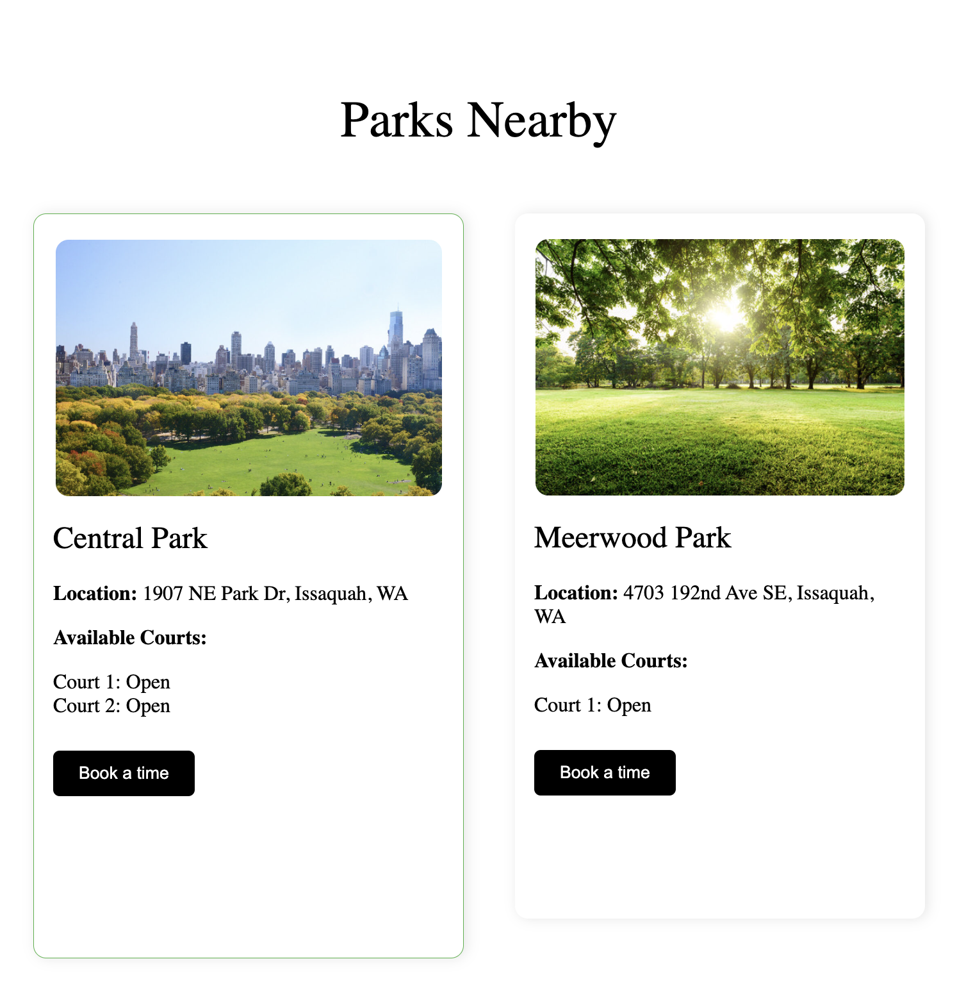
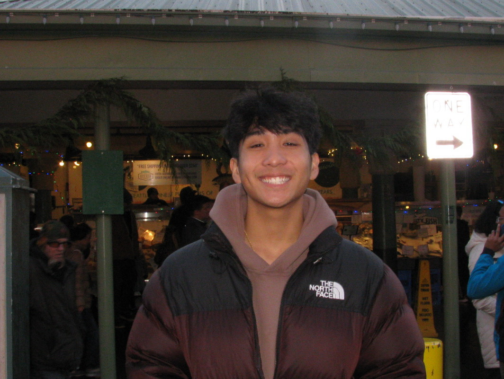
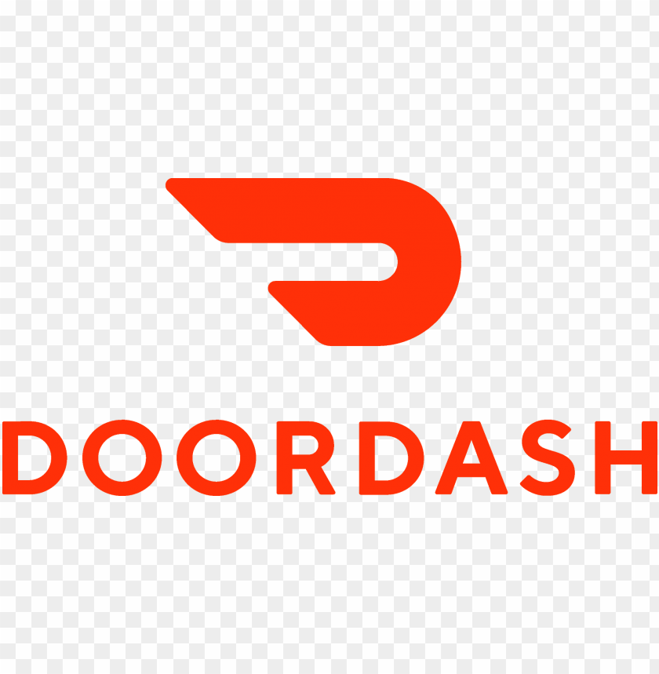

About me
Get to know more about where I study and what I'm working on.

Hi! I'm Luke Sarausad, a Computer Science major with a Data Science focus at the University of Washington and a Business minor. I'm passionate about using technology and data to solve real-world problems.
Through my previous experiences and projects I have grasped a deeper understanding of fullstack development and working with industry standard technologies like AWS, React.js and more.
This summer, I'll be a Software Engineer Intern at DoorDash in their San Francisco office. In my free time I enjoy working on projects and playing golf. Feel free to connect with me or contact me anytime!
Experience
2+ years of software engineering internships and projects
Education
University of Washington, B.S. Computer Science, Minor in Business
Experience
How far each tool carries. The flag at the end of each lane is full proficiency.
Languages
Frameworks & technologies
My journey
Five holes so far, played in order.
| Hole | When | What |
|---|---|---|
| 1 | 2019–2023 | Started programmingExplored programming through a series of courses offered at my high school and personal projects. |
| 2 | 2023–Present | University of WashingtonStudying Computer Science with a Data Science focus and Business minor at the University of Washington. |
| 3 | 2024 | Projects & developmentBuilt fullstack applications and personal projects to expand my portfolio in software development. |
| 4 | Summer 2025 |
|
| 5 | Summer 2026 |  DoorDashSWE Intern for the LaunchPad team. Working on building new product initiatives. |